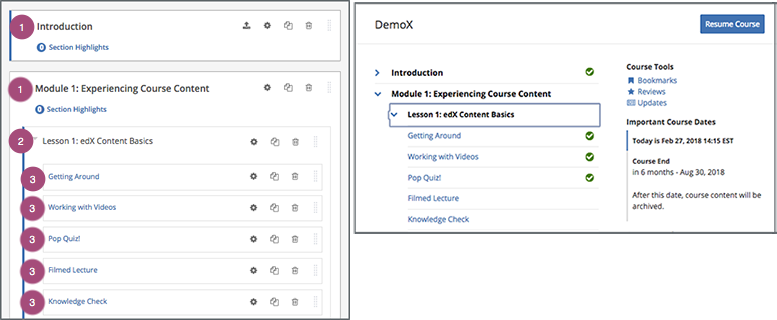
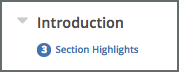

7.3. Developing Course Sections#
To develop sections in your course, you must first understand the following topics.
7.3.1. What Is a Section?#
A section is the topmost category in your course. A section can represent a time period in your course, a chapter, or another organizing principle. A section contains one or more subsections.
7.3.2. Viewing Sections in the Outline#
In the following image, the Studio view of the course outline is on the left. On the right is the view of the course outline in the LMS.
The numbers represent the following levels.
Note
The Course Outline page does not show components. You add or access components by selecting the units that contain the components.
7.3.2.1. Course Progress Information#
The course outline in the LMS also indicates a learner’s progress through the course. A green check mark next to the name of a section, subsection, or unit indicates that a learner has completed all the following actions in the section, subsection, or unit.
Viewed all of each video.
Submitted answers for all of the problems.
Viewed all HTML content for at least five seconds.
If a learner selects the Resume Course option, the course opens to the unit that the learner most recently completed.
For information about more specific learner data, including the learner’s grades or answers for individual problems, see Managing Learner Progress and Grades.
7.3.3. Sections and Visibility to Learners#
Learners cannot see any content in a section if the section’s release date is unscheduled or has not passed.
If a section’s release date has passed, learners can see content in the section if:
The release date for the subsection that contains that content has passed.
The unit has been published.
The unit is not hidden from learners.
7.3.4. Release Statuses of Sections#
As an course author, you control the release status of sections. For the content of a section to be visible to learners, the section must be released. See the following topics for more information about the possible release statuses of sections.
7.3.4.1. Unscheduled#
If you do not change the course start date
default value, 1/1/2030 00:00:00 UTC, when you create a new section, its
release date will appear as Unscheduled. When the section release date is
unscheduled, learners cannot see any content in that section, regardless of
the publishing status of that content.
If you have modified the course start date, when you create a new section, the default release date is the course start date.
To make the content available to learners, you must schedule the release date.
7.3.4.2. Scheduled#
A section that is scheduled for release on a future date will not be visible to learners until after the release date. Regardless of the publishing status of content within the section, the entire section will not be visible to learners.
The scheduled date must pass for the section to be visible to learners.
7.3.4.3. Released#
A section that is released is visible to learners; however, learners see only subsections within the section that are also released, and units that are published.
7.3.4.4. Released with Unpublished Changes#
If you change a unit in a released section but do not publish the changes, learners see the last published version of the modified unit.
You must publish the unit for learners to see the updates.
7.3.4.5. Staff Only Content#
A section can contain a unit that is hidden from learners and available to members of the course team only. That unit is not visible to learners, regardless of the release date of the section or subsection.
7.3.5. Create a Section#
If you do not change the course start date
default value, 1/1/2030, when you create a new section, its release date
will be Unscheduled.
If you have modified the course start date, when you create a new section, the default release date is the course start date.
Caution
If the course start date is in the past, newly created sections are immediately visible to learners.
To create a new section, follow these steps.
On the Course Outline page, select New Section. This option appears at both the top of the page and below the current sections in the outline.
A new section appears at the end of the course content, with the section name selected.
Enter the name for the new section. A descriptive name can help learners locate content in the course. It can also help you select content when you analyze performance in edX Insights.
Add subsections to the new section as needed.
It is recommended that you test course content as you create new sections.
7.3.6. Change a Section Name#
To edit a section name, move your cursor over the section name to show the Edit icon.
Select the Edit icon next to the section name. The name field becomes editable. Enter the new name, and then tab or click outside of the field to save the name.
7.3.7. Set a Section Release Date#
To set the section release date, follow these steps.
Select the Configure icon in the section box.

The Settings dialog box opens.
Enter the release date and time for the section.
Note
The time that you set is in Coordinated Universal Time (UTC). You might want to verify that you have specified the time that you intend by using a time zone converter such as Time and Date Time Zone Converter.
Select Save.
For more information, see Release Dates.
7.3.8. Set Section Highlights for Highlight Emails#
If your Open edX system adminstrator has configured your instance of the Open edX platform to send course highlight emails, you can send automatic email messages to learners in your course that contain three to five “highlights” of upcoming course content. A highlight is a brief description of an important concept, idea, or activity in the section. Your Open edX system administrator provides the template for this course highlight email, and you enter the highlights for the email in Studio.
For more information, contact your Open edX system administrator.
Note
The highlights that you specify persist when you re-run your course.
7.3.8.2. Send Highlight Emails#
To send highlight emails to your learners, you must first set highlights for each section. When you have set section highlights, you then enable the Course Highlight Emails setting.
The number of highlights that you have set for a section is visible in the course outline, below the name of the section.
7.3.8.2.1. Set Course Section Highlights#
Note
If your Open edX system adminstrator has not configured your instance of the Open edX platform to send course highlight messages, learners do not receive messages even if you enable highlights and enter highlights for each section.
To set highlights for a course section, follow these steps.
On the Course Outline page, locate the section you want, and then select Section Highlights under the section name.
In the Highlights for <section name> dialog box, enter three to five highlights for the section. Enter one highlight in each field. Each highlight can include up to 250 characters.
Select Save.
7.3.8.2.2. Enable Highlight Emails#
After you have set and reviewed the highlights for each course section, you enable highlight emails.
To enable highlight emails, follow these steps.
On the Course Outline page, locate the Course Highlight Emails setting, and then select Enable Now.
In the dialog box that opens, select Enable.
Note
If you do not enable highlights, the edX platform does not send course highlight emails, even if you enter highlights for one or more sections.
You cannot disable highlight emails after you enable them. If you do not want to send highlight emails after you enable them, you can delete highlights in all sections.
7.3.9. Publish All Units in a Section#
To publish all new and changed units in a section, select the Publish icon in the box for the section.
Note
The Publish icon only appears when there is new or changed content within the section.
For more information about statuses and visibility to learners, see Unit Publishing Statuses.
7.3.10. Hide a Section from Learners#
You can hide all content in a section from learners, regardless of the status of subsections and units within the section.
For more information, see Visibility Settings.
To hide a section from learners, follow these steps.
Select the Configure icon in the section box.
The Settings dialog box opens.
In the Section Visibility section, select Hide from learners.
Select Save.
Now, none of the content in the section is visible to learners.
To make the section visible to learners, repeat these steps and deselect Hide from learners.
Warning
When you deselect Hide from learners for a section, not all content in the section is necessarily made visible to learners. If you explicitly set a subsection or unit to be hidden from learners, it remains hidden from learners. Unpublished units remain unpublished, and changes to published units remain unpublished.
7.3.11. Delete a Section#
When you delete a section, you delete all subsections and units within the section.
Warning
You cannot restore course content after you delete it. To ensure you do not delete content you may need later, you can move any unused content to a section in your course that you set to never release.
To delete a section, follow these steps.
Select the Delete icon in the section that you want to delete.

{kind=link}
When you receive the confirmation prompt, select Yes, delete this section.